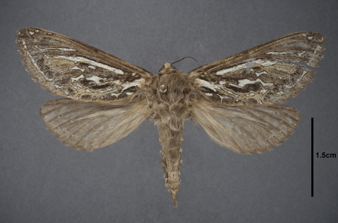

Dalaca quadricornis es una polilla de la familia Hepialidae, caracterizada por su cuerpo robusto y peludo, alas anteriores de color marrón con patrones irregulares blanquecinos y alas posteriores de tonalidad beige. Pertenece al grupo de las polillas fantasma y presenta una apariencia característica de los lepidópteros de esta familia.